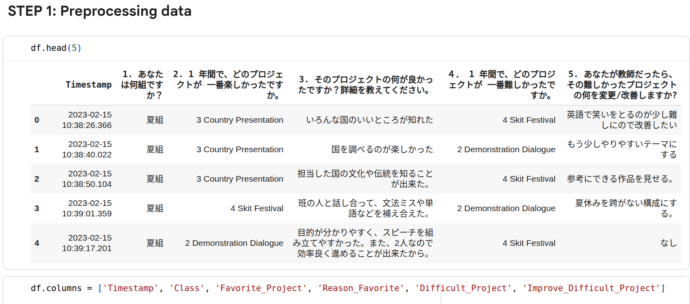
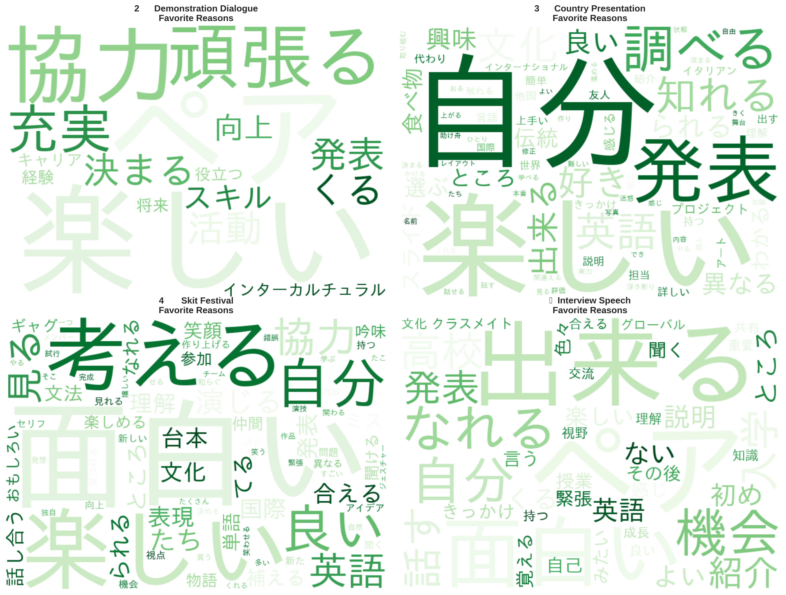
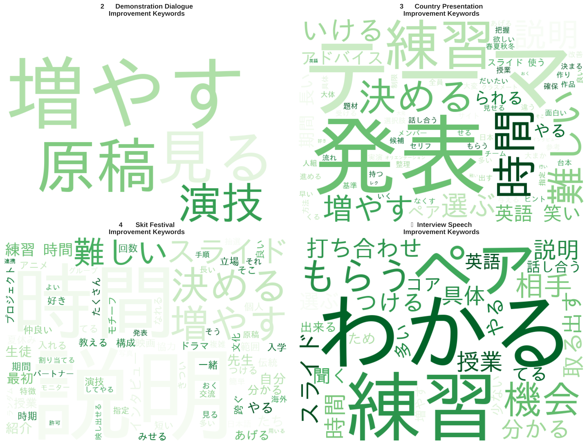

Japanese Student Feedback Analysis
Python • BERT • Japanese NLP
Overview
Asked Japanese students to write what they liked, disliked, and wanted improved in project-based English classes.
Cleaned responses and analyzed comments using Japanese BERT embeddings and clustering to find recurring themes.
Used results to simplify curriculum design and remove one weak project.
Results
Source
Student survey responses
Method
Japanese BERT + theme clustering
Main Findings
Students valued creative and cultural projects most
Outcome
One low-value project was removed
Charts



BERT Clustering of Student Improvement Feedback
Japanese free-text responses were converted into semantic embeddings and grouped into recurring themes using unsupervised clustering. This helped identify which class projects created the most friction and why.
Cluster 1
Practice Time & Preparation
Students requested more rehearsal time, planning time, and collaboration time.
Cluster 2
Instructions & Structure
Students wanted clearer examples, clearer tasks, and better expectations.
Cluster 3
Mixed / Minor Feedback
Low-frequency comments specific to individual projects.
Where Friction Appeared Most
- Interview Speech: Higher need for clearer structure
- Skit Festival: More requests for preparation time
- Country Presentation: Mostly positive with minor improvements
- Demonstration Dialogue: Low engagement and weak preference scores
These findings supported removal of one lower-value project and simplification of future curriculum design.